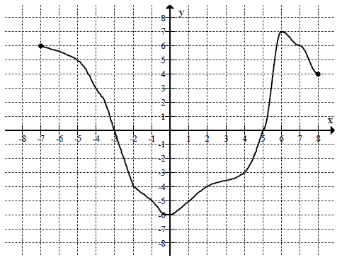
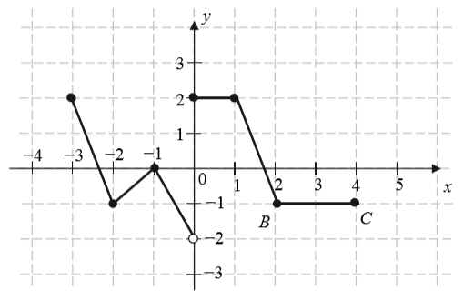

Jesteś tutaj: Szkoła → Funkcje → Funkcje - definicje
i własności → Wykres funkcji → Zadania na rysowanie wykresów funkcji
Zadania na rysowanie wykresów funkcji
Wiele zadań związanych z rysowaniem, przekształcaniem i analizowaniem wykresu
funkcji znajdziesz w działach tematycznych, takich jak np.: funkcja
liniowa i funkcja kwadratowa.
Zadania na odczytywanie z wykresu zbioru wartości funkcji znajdziesz tutaj.
Zadania na odczytywanie z wykresu zbioru wartości funkcji znajdziesz tutaj.
Na rysunku przedstawiony jest wykres funkcji \(f(x)\) określonej dla \(x\in [-7,
8]\).  Odczytaj z wykresu i
zapisz:
a) największą wartość funkcji \(f\),
b) zbiór rozwiązań nierówności \(f(x)\lt 0\).
a) największą wartość funkcji \(f\),
b) zbiór rozwiązań nierówności \(f(x)\lt 0\).
a) \(7\); b) \(x\in (-3;5)\)
Na rysunku przedstawiony jest wykres funkcji \(y=f(x)\).  Które równanie ma dokładnie trzy
rozwiązania?
Które równanie ma dokładnie trzy
rozwiązania?
Które równanie ma dokładnie trzy
rozwiązania? A.\( f(x)=0 \)
B.\( f(x)=1 \)
C.\( f(x)=2 \)
D.\( f(x)=3 \)
C
Naszkicuj wykres funkcji \[f(x)=\begin{cases} 2x+1\quad \text{dla }x\le 0\\
x+2\quad \text{dla }x>0 \end{cases} \]
Największą wartością funkcji \( f \) jest 
A.\(3 \)
B.\(0 \)
C.\(-3 \)
D.\(8 \)
A
Rysunek przedstawia wykres funkcji \(f\) zbudowany z \(6\) odcinków, przy czym
punkty \(B=(2,-1)\) i \(C=(4,-1)\) należą do wykresu funkcji.  Równanie \(f(x)=-1\) ma
A.dokładnie jedno rozwiązanie.
B.dokładnie dwa rozwiązania.
C.dokładnie trzy rozwiązania.
D.nieskończenie wiele rozwiązań.